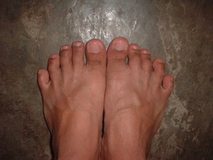

palapala 
/palapala/
n.
“foot”
n.
foot
Ka igpasabut te palapala iyan se igdiek diye te tane. Bayew makehal ka seini ne baad te paa su igdiek nahud. Iyan igngaran te Matigsalug te seini ka palu.
Amana ne me maluag ka me palapala te me kabuybuyahan ta su warè ma me sepatus dan dengan.
The feet of our ancestors was broad because they didn't have shoes before.
Kene ne masakit ne igdiek ka palapala ku su makepal.
My foot is not pain to step because it think.
Eng. foot
Tag. paá
Ceb. tiil
Ilo.: sáka
OCM: Ethnoanatomy (826)
DDP: Leg (2.1.3.2)
Online dict status: -
Usage level: L
Updated by: RJH,TME,QDL,RJH,RAA
Last updated: 14/Sep/2016
This page last updated: 03-Jan-2020
Copyright © 2009-2014, Matigsalug Language Christian Association, Inc